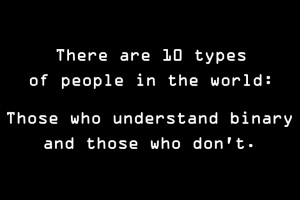
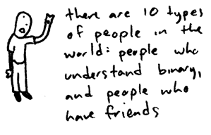

Chapter 2 Binary, ASCII, and Everything in Bit-ween
You've probably heard that computers are all about zeroes and ones. But... what does that mean? And... why? After all, two and three are pretty great numbers, too! (But don't get me started on seven.)
Let's say I ask you a question like "Do you like cats?" There are two possible answers to this question: yes and no. We can represent your answer to this question using one bit, which is the most basic unit of information in computing. A bit can only have two possible values, which we can think of as "on" or "off," "true" or "false," or finally, if you're a computer, "0" or "1". We can also use a bit to represent, for example, whether a light is on or off, the result of a coin flip, or the sign of a magnet.
Answering the question "How much do you like cats?" is a bit different (pun fully intended). This question has more than one answer; you could say you kinda like cats, you really love cats, you couldn't live without cats, and so on. You could also think about answering this question on a scale from one to five, a scale from one to ten, etc. Either way, we'll need more than just one bit to represent your love of all things feline, since a 0 or a 1 doesn't cover all of the possible answers to this question.
However, before we talk any more about how computers represent numbers, let's quickly review how we as humans are probably used to representing numbers. According to my laptop's keyboard, we have ten digits: 0, 1, 2, 3, 4, 5, 6, 7, 8, and 9. (We call this the decimal system.) That means that we can represent ten different numbers using only one digit. Of course, we're going to start running into issues when we want to represent the number that is one more than 9. Luckily, we've already solved this problem: one more than 9 is 10. To create the number 10, we created a new space for a second digit, which you may remember as the "tens place" from grade school (that is, if you weren't too busy playing with yo-yos like I was). Similarly, we have a hundreds place, thousands place, and so on for larger numbers.
The fact that we use ones, tens, hundreds, and thousands is no accident. We have 10 different digits to choose from, and 100 = 1, 101 = 10, 102 = 100, and so on. (Remember, when we say something like 103, that's just short for 10 × 10 × 10, or 1000.) So, these places can be represented with a table like this:
| 104 | 103 | 102 | 101 | 100 |
Let's fill in these blanks with some digits:
| 1 | 2 | 3 | 4 | 5 |
| 104 | 103 | 102 | 101 | 100 |
Now, to figure out what number is represented by those digits, we multiply the digit in the ones place by 1, the digit in the tens place by 10 (and so on), and then add them together. That means that the above number is:
(1 × 104) + (2 × 103) + (3 × 102) + (4 × 101) + (5 × 100) = 10000 + 2000 + 300 + 40 + 5 = 12345
Make sense? Alright, back to those zeros and ones. Remembering ten different digits can be hard work. Heck, I can barely remember birthdays. Let's make one tiny change to the above table. Rather than having places for 100, 101, 102, and so on, let's instead create places for 20, 21, 22, and so on:
| 24 | 23 | 22 | 21 | 20 |
This representation is called binary (as opposed to decimal). In this world, we'll represent numbers using a ones place, a twos place, a fours place, an eights place, a sixteens place, and so on. Now, rather than using ten digits to represent numbers, we'll only use two: 0 and 1. That means that we can represent each digit in a binary number with one bit. Any number then, can be represented as a collection of bits!
Let's try counting in binary, starting with 0. The number zero in binary is still 0, phew. Same with the number one, which is just 1 in binary. The number two, on the other hand, is a whole new ball game. Our only choices for digits are 0 and 1, so we can't represent the number two with the digit 2. Using the decimal system, we ran into the same problem when we wanted to represent the number ten, because 9 was the last digit we had avilable. So, we'll do exactly what we did last time: we'll introduce a new slot for a digit. Now, we can represent the number two as "10" in binary. We now have a 1 in the twos place and a 0 in the ones place, which means the number we're representing is:
(1 × 2) + (0 × 1) = 2 + 0 = 2
Great, let's try a three now. Since we could represent a two using the binary number 10, it doesn't feel like we need to introduce a new slot for a digit yet. Instead, let's try flipping that 0 into a 1, which will give us:
(1 × 2) + (1 × 1) = 2 + 1 = 3
Sweet! If we now want to represent the number four now, it looks like we're going to need another slot for a digit. Because this new place is going to be the fours place, we know that we can represent the number four as "100". Let's do one more for good measure. To represent five in binary, we'll want to add one to our represntation of 4, which we can do by flipping the last bit. This gives us:
(1 × 4) + (0 × 2) + (1 × 1) = 5
Alright, counting was fun, but let's now try converting a slightly larger binary number into decimal. Our goal now is to figure out what number is represented by 10110. To do so, let's start with a table that tells us what each of the places in a binary number is.
| 1 | 0 | 1 | .1 | 0 |
| 24 | 23 | 22 | 21 | 20 |
To figure out what number these bits represent, let's do the same thing we did before, but rather than using powers of 10, we'll use powers of 2:
(1 × 24) + (0 × 23) + (1 × 22) + (1 × 21) + (0 × 20) = 16 + 0 + 4 + 2 + 0 = 22
And that's it! The binary number 10110 is the same as the decimal number 22. Sometimes, you might see binary number start with one or more zeroes. You can actually add as many zeroes as you want to the beginning of a binary number without changing it's value, since that's the equivalent of adding zero to the number, which won't change much. Instead, this is sometimes done to indicate that the number is indeed a binary number. A convention like 0b101 makes it more clear that we're referring to the binary number 5, not the decimal number 101.
For reference, here's a handy dandy chart listing the first few powers of 2, which will be helpful when working with binary numbers.
| 20 | = | 1 |
| 21 | = | 2 |
| 22 | = | 4 |
| 23 | = | 8 |
| 24 | = | 16 |
| 25 | = | 32 |
| 26 | = | 64 |
| 27 | = | 128 |
| 28 | = | 256 |
| 29 | = | 512 |
| 210 | = | 1024 |
Let's try another one. What's decimal representation of the binary number 01101? First, let's fill in the table:
| 0 | 1 | 1 | .0 | 1 |
| 24 | 23 | 22 | 21 | 20 |
Now, let's add everything up:
(0 × 24) + (1 × 23) + (1 × 22) + (0 × 21) + (1 × 20) = 0 + 8 + 4 + 0 + 1 = 13
So, 01101 is the lucky number 13!
What if we want to go the other way? Let's say we have the decimal number 12, and we want figure out its binary representation. Using the same table, we can work backwards by filling in each space. The process of convering a decimal number to binary is just like making change at a cash register. So that you don't annoy your customers, you always want to make change using as few coins as possible.
| 24 | 23 | 22 | 21 | 20 |
Let's start all the way at the left. 24 = 16, which is bigger than 14. That means there can't possibly be a 1 there, so we can put a 0 in the first space. If we were making change at a cash register, putting a 1 in the first space case would be like giving someone who was owed 23 cents a quarter.
| 0 | ||||
| 24 | 23 | 22 | 21 | 20 |
Now we'll move to the next space. 23 = 8, which is smaller than 14, so we want to put a 1 in the second space. Remember, we want to make change using as few coins as possible, so if at any point we can put a 1 in a space without creating too large a number, we should. If we don't, then we could end up giving our customer five pennies when we could have simply used one nickel. Now our table looks like this:
| 0 | 1 | |||
| 24 | 23 | 22 | 21 | 20 |
Okay, now we've "made change" for 8 out of 14, so we have 6 to go. The next space is a 4, which is less than 6. So, we again want to put a 1 in that space to get:
| 0 | 1 | 1 | ||
| 24 | 23 | 22 | 21 | 20 |
Alrighty, 2 to go. That means the next space, the 2s place, must be a 1, since that would give us the grand total of 14 that we were looking for! We can mark the last remaining space with a 0. Our final table looks like this:
| 0 | 1 | 1 | 1 | 0 |
| 24 | 23 | 22 | 21 | 20 |
Phew! The binary representation of 14 is 01110.
Now that we can go back and forth between binary and decimal, let's try doing a bit of math. First, let's try adding together two binary numbers: 0011 and 0110. The naive way to go about this might be to convert 0011 to the decimal value 3, 0110 to the decimal value 6, add 6 and 3 to get 9, and finally convert 9 back to the binary value 1001. However, that felt like a lot of unnecessary steps (and kinda like cheating). Instead, we can add together binary values using the same process we've used since grade school for adding together decimal values.
| 0 | 0 | 1 | 1 | |
| + | 0 | 1 | 1 | 0 |
We'll start at the rightmost column. We know that 1 + 0 must be 1, so we can fill in a 1 in our answer.
| 0 | 0 | 1 | 1 | |
| + | 0 | 1 | 1 | 0 |
| 1 |
Okay, now we have 1 + 1. We know that's equal to the decimal value 2, which is 10 in binary. Just like we do in the normal addition process, we'll want to fill in a 0 here and then carry the 1. Now, we have something that looks like this:
| 1 | ||||
| 0 | 0 | 1 | 1 | |
| + | 0 | 1 | 1 | 0 |
| 0 | 1 |
Alrighty, taking into account the 1 we just carried, we have:
| 1 | 1 | |||
| 0 | 0 | 1 | 1 | |
| + | 0 | 1 | 1 | 0 |
| 0 | 0 | 1 |
And now, we can finish this off without a hitch:
| 1 | 1 | |||
| 0 | 0 | 1 | 1 | |
| + | 0 | 1 | 1 | 0 |
| 1 | 0 | 0 | 1 |
Great! We got exactly the answer we were expecting to get: 1001, or 9. Adding sure was fun, so let's try doing something else. Let's say we take that sequence of bits, 01001, and shift every bit one place to the left. Now, we'll get a sequence that looks like 10010. Turns out this is the binary representation of 18, which just so happens to be 9 × 2. Coincidence? Let's do the same thing with another random sequence of bits.... 0101001 looks good to me. In decimal, this is the value 41. Let's shift every bit to the left again, which gives us 1010010. This is in fact the number 82, which is again twice our original value.
It turns out that shifting bits to the left is equivalent to doubling the number! If we shift bits to the left n times, then we'll double our number n times. Put another way, shifting bits left n times is the same as multiplying the number by 2n. What about shifting bits in the other direction, to the right? As you might have guessed, this the same as cutting the number in half n times, or dividing by 2n.
So, why is this useful? As you probably learned in grade school, multiplying two large numbers together is a difficult and time-consuming thing to do. It's similarly relatively time-consuming for your computer to do the same. However, it's pretty easy for computers (and us!) to shift the bits of a binary number to the left or to the right. So, this can make the process of multiplying large numbers much more efficient!
All of the numbers we've looked at so far have been greater than zero. We can, though, use binary to represent negative numbers as well. One approach would be to use the first bit in a binary number to designate whether the number is positive, which is called the sign-and-magnitude method. In this representation, 0001 would be a positive 1, while 1001 would be a -1. This works, but there are a few problems with this approach. First, it seems kinda wasteful to dedicate an entire bit just to representing whether or not the number is positive or negative. Second, this representation has multiple ways of expressing zero! For example, both 0000 and 1000 are interpreted as zero, even though -0 doesn't make any sense. That's gonna get pretty confusing! Finally, this representation doesn't allow for addition, which seems like it might be... a good thing to support. For example, 1001 + 0001 = 1010, which is like saying 1 - 1 = -2. Oops.
Let's try a different way of representing negative numbers called two's complement. This will feel a bit weird at first, but you'll have to trust me on this one. Suppose we want to represent the number -5 using two's complement. We'll start with positive 5, which is simply 0101 in binary. First, we'll flip all of these bits: every 0 will become a 1, and every 1 will become a 0. This gives us 1010. Now, we'll add 1 to this number, which gives us 1011. This is the two's complement representation of 5. To convert back to a decimal, we'll use the exact same process as before, but now, the leftmost place (and only the leftmost place) will be a negative number rather than a positive number. In our example, rather than having an 8s place as we did before, we'll now have a -8s place, followed by the 4s place, 2s place, and 1s place that we're already used to. So, using two's complement, the decimal value of 1011 is:
(1 × -8) + (0 × 4) + (1 × 2) + (1 × 1) = -5.
Woah! That worked out well. With this representation, which admittedly feels a lot less intuitive, we're able to solve the problems we ran into with sign and magnitude: we're not really wasting a bit anymore, we have only one representation of zero, and addition works again. Let's just make sure quickly: 5 + -5 should be zero, and 1011 + 0101 = 0000 (dropping the last one that we carried). Sweet deal! Don't worry if two's complement is still a bit confusing, as we'll really only be dealing with positive numbers throughout.
Alright, hopefully jokes like this one now make a bit more sense!

See, didn't that make it all worth it? Aaaaaand for those of you groaning because you've heard that joke a million times already:

I dunno about you, but I'm getting tired of numbers. In fact, we probably use letters (and maybe other symbols) more than we use numbers while using a computer on a daily basis. But, computers are still all about zeroes and ones, so how can we represent non-numeric values?
To solve this problem, we can create a "character encoding," which maps something to letters or symbols. For example, ships utilize a character encoding in which each letter is represented by a different flag. When a ship needs to broadcast a message consisting of English letters, the crew can instead fly a sequence of flags. Others can then understand this message because there exists a standardized, agreed-upon translation from flag to English letter. In case you're as curious as I was, here's the International Maritime Signal Flag character encoding:

You may also have heard of Morse Code, which is another character encoding. Here, each letter is represented by a series of sounds. Again, this standardized mapping allows us to transmit English messages without actually using any English letters.

Since flags and sounds are a bit impractical for your computer, a character encoding called US-ASCII is more common. ASCII defines numerical representations for 128 different "characters," where a character can be a letter, number, symbol, or Mickey Mouse. For example, the character "A" is represented by the number 65 in ASCII, and the character "a" is represented by the number 97. So, whenever we need to represent the character "A" using ASCII, we can simply use the number 65 instead, just like a ship would fly a blue and white flag. From your computer's perspective, then, the sequence of characters "CS E-1" could be represented by the sequence of decimal numbers "67 83 32 69 45 49", which ultimately will be stored as the sequence of binary numbers "FILL THS IN". Since we've already seen that binary can be used to represent numbers using only zeroes and ones, we can use ASCII to represent letters using zeroes and ones as well. Here's the complete ASCII table:
ASCII Table Diagram
The first 32 characters in the table are reserved for control sequences, which back in the day could be used to control physical devices like printers. Not only are those not so relevant any more, but what if we go to jolly old England and inquire as to the price of a spot of tea? The standard ASCII table doesn't have the character £, but luckily, ASCII isn't the only character encoding around. While we also have an extended version of ASCII that is double in size, an encoding called UTF-8 (a form of unicode) which contains definitions for 1,112,064 different characters, is commonly used today. In fact, there's a good chance that any website you're browsing is using UTF-8 (and there's a 100% chance this one is). Among the millions of UTF-8 characters are the "snowman" (☃), "heavy black heart" (❤), and even the "neither less than nor greater than" (≸), not to be confused with the more common "equal to" (=). Still, at the end of the day, that snowman is really just represented as a series of bits that can be translated into a winter wonderland using an agreed-upon standard.
As we start using these character encodings to create long messages, we're going to create larger and larger sequences of bits. It makes sense, then, to create units of information larger than a single bit. A sequence of 8 bits is commonly referred to as a byte. As an aside, the official technical term for a sequence of 4 bits is a nibble, ha, ha, ha. Since a byte is still a pretty small piece of information, describing data in terms of kilobytes (where 1 kilobyte is about 1000 bytes), megabytes (where 1 megabyte is about 1000 kilobytes), and gigabytes (where, you guessed it, 1 gigabyte is about 1000 megabytes) has become commonplace. More on that later, though!
That's it for binary and ASCII! In the next few sections, we'll start to see how your computer uses and stores data.
Practice Problems
Convert the following numbers from decimal to binary, showing each step.
a. 50
b. 164
c. 12345
Convert the following numbers from binary to decimal, showing each step.
a. 0101010
b. 010101111
c. 01111011010010
What do all binary numbers ending in 1 have in common?
What's the largest number we can represent with 16 bits? How about 32 bits?
We've seen that decimal uses ten different digits and binary uses two different digits. The octal system instead uses seven different digits, but works in exactly the same way. What is the decimal value of the octal number 0644? How about 0755?
What's the binary representation of the ASCII character "T"?
How many bits are used to represent a standard US-ASCII character?
Why isn't 1 the ASCII code for the character "1"?